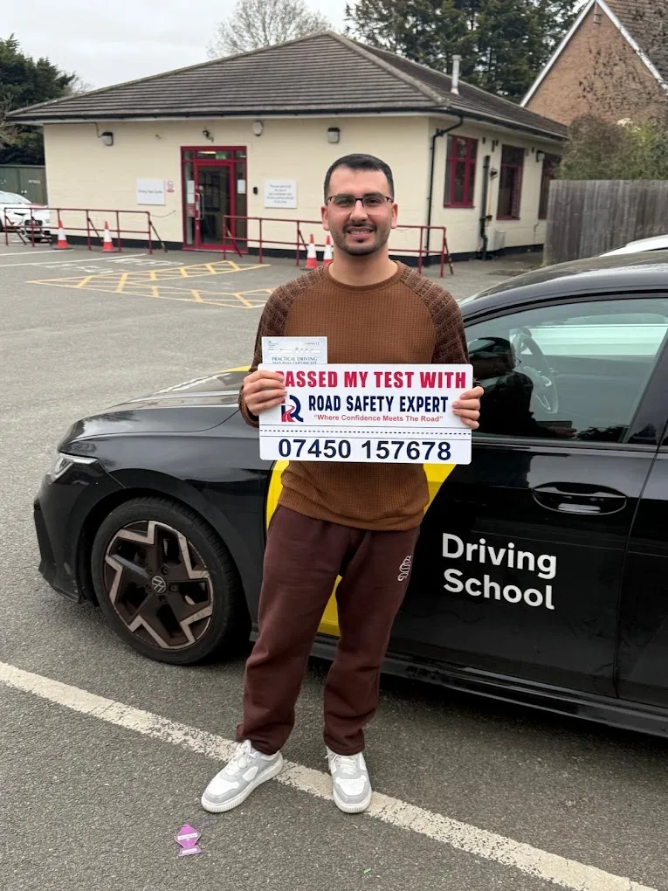

Learn to drive with confidence in West London
Road Safety Expert Driving School gives friendly, personalised manual and automatic lessons, from first-timers to test-ready learners.

Why choose RSE Driving School?
Personalised instruction
Every lesson is tailored to your pace, strengths and the areas you want to improve.
Friendly and patient
Calm, clear communication so you feel supported behind the wheel.
Support for nervous learners
We talk through each step before you do it.
Real-world experience
Practical skills for everyday roads, not only for the test.
Test preparation
Mock tests and guidance that match what you need.
Lessons and services
Manual lessons
Learn in a car with a clutch and gears.
Automatic lessons
Learn without a clutch, so you can focus on observation, road positioning and decision-making.
Beginner lessons
A calm start for people who have never driven.
Refresher lessons
Rebuild confidence after a break, or after moving to the UK.
Mock driving tests
A practice run under test-style conditions so test day feels familiar.
Test day car hire
Use the instructor's car for your practical test, including a pre-test warm-up.
Pass Plus
Extra training for new drivers who want more experience in different conditions.
Meet the instructors
Atta Ur Rahman
Owner and founder, with over 10 years of experience as a professional instructor. Known for a friendly approach to comprehensive driving tuition.
Rizwan Butt
Instructor who specialises in helping learners pass with ease and build safe driving habits.
Our students' success stories
Every pass is a result of a learner's hard work. Here are some of our recent successes.
Areas we cover
- Mill Hill
- Greenford
- Hendon
- Pinner
- Harrow
- Wembley
- Northolt
- Ruislip
- Ealing
- Perivale
- Kingsbury
- Stanmore
Plus surrounding locations. If your area isn't listed, get in touch as we may still be able to help.
Areas pageFree Learning Centre
Free guides, flashcards and a practice quiz. No account needed.
Common questions
Do you offer manual and automatic lessons?
Yes, we offer both manual and automatic lessons.
Do you teach complete beginners?
Yes. Many of our learners have never driven before. We start with the basics and move at your pace.
Do I need to pass my theory test before taking driving lessons?
No. You need a provisional licence to start lessons, but you do not have to pass the theory test first. You do need to pass it before you can book your practical test.
How many lessons might I need?
It varies from person to person. It depends on your starting point, how often you practise and how confident you feel. Your instructor will give you an honest view as you progress.
How often should I take lessons?
Regular lessons help you remember what you have learned. Many learners find one or two a week works well. We can discuss what suits your schedule.
Ready to start learning?
Call or email to ask about lessons and availability in your area.